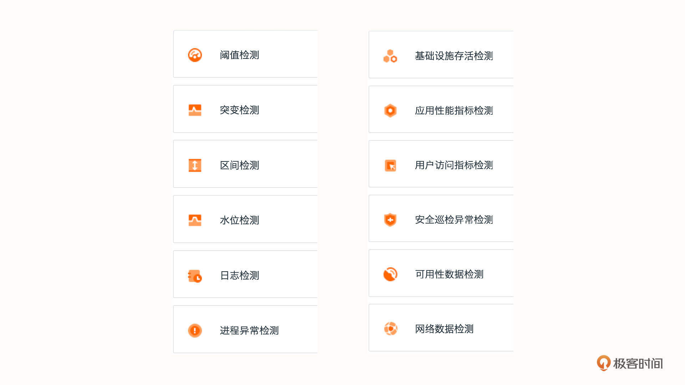
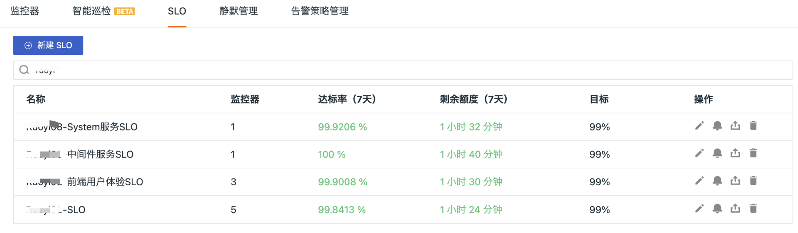
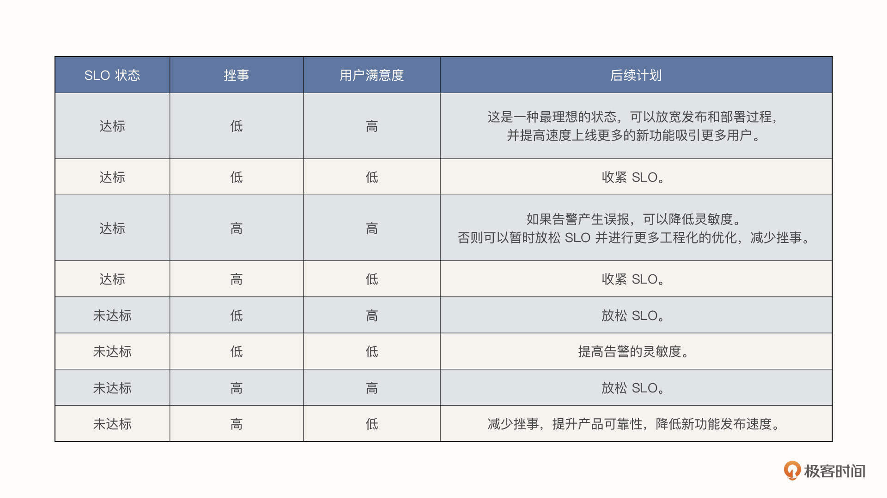

- 00 开篇词 可观测性，让开发和维护系统的你每晚都能睡个好觉！.md.html
- 01 以史鉴今：监控是如何一步步发展而来的？.md.html
- 02 基本概念：指标+日志+链路追踪=可观测性？.md.html
- 03 相互对比：可观测性和传统监控有什么区别？.md.html
- 04 OpenTelemetry：如何利用OpenTelemetry采集可观测数据？.md.html
- 05 构建可观测平台：应该购买商业产品还是自己搭建？.md.html
- 06 团队合作：不同团队如何高效共建可观测性？.md.html
- 07 软件开发：如何利用可观测性进行驱动？.md.html
- 08 建立 SLO：如何为系统可靠性的量化提供依据？.md.html
- 09 跟踪 SLO：如何基于错误预算采取行动？.md.html
- 10 实战 1：从 0 到 1 建立系统应用的可观测性.md.html
- 11 实战 2：基于可观测性数据进行问题分析和根因定位.md.html
- 12 实战 3：构建基于 Kubernetes 的系统可观测性.md.html
- 13 实战 4：建立软件持续集成和发布的可观测性.md.html
- 14 文化建设：如何构建可观测性的文化和框架_.md.html
- 15 展望未来：可观测性在未来的发展趋势是什么？.md.html
- 结束语 在实践中，用科学的方法分析和解决问题.md.html
- 捐赠
09 跟踪 SLO：如何基于错误预算采取行动？
你好，我是翁一磊。
上一讲，我们介绍了 SLO 的概念，以及如何选取 SLI 来和相关的 SLO 进行关联，最终实现 SLO 的可度量。
SLO 提供了一个框架，它围绕应用程序的性能和可靠性定义了明确的目标，最终帮助团队提供一致的客户体验，平衡功能开发与系统稳定性之间的矛盾，改善与内部和外部用户的沟通。
那当我们设定好 SLO 之后，又应该怎么持续跟踪，并根据 SLO 的状态来决定下一步的行动计划呢？这是我们这一讲的重点。
持续跟踪 SLO 和错误预算状态
在上一讲我们提到了一个非常重要的概念，那就是错误预算，它是 100% 可靠性和 SLO 目标之间的差额。当我们设定好 SLO，并关联 SLI 进行持续跟踪之后，如果有SLI 未能满足要求，错误预算就需要扣除发生错误的时间。
上节课我们还举了一个例子，说 SLO 如果是 99.95%，那么在一个月的时间内，初始状态下就有 2 分钟 54 秒的错误预算。而如果发生了影响实际用户的报错或是延迟太高（具体取决于你如何设定 SLI），问题持续了 1 分钟，那这个月剩余的错误预算就只有 1 分钟 54 秒了。
接下来，我会通过在观测云平台中的一个具体的例子，让你更进一步熟悉和了解这些概念。你可以免费注册一个账号，跟我一起进行实际操作（观测云也提供了 Demo 演示空间，你可以点击左上角的工作空间名称，在弹出的对话框中点击“体验 Demo 空间”即可进入）。
在观测云中，你可以创建多种监控器，不仅仅只是基于阈值检测，还包括了日志形成指标、应用性能指标、用户访问指标、可用性监控数据等多种维度，它可以帮助你定义 SLI 并将其与 SLO 进行关联。

SLO 为你的 SLI 设置了精确的目标，这些目标是反映服务运行状况和性能的指标。例如，如果你想确保快速处理典型的用户请求，可以使用来自应用性能监测的 P95 延迟作为 SLI。然后，你可以将目标定义为：在任何日历月 99% 的时间里，所有用户请求的 P95 延迟（按每分钟计算）需要小于 250 毫秒。
在通常情况下，为了准确跟踪实际性能与设定目标的相对情况，你既需要监控实时性能（例如，每 1 分钟计算一次 P95 延迟，并将它与 250 毫秒阈值进行比较），还需要测量在更长的时间跨度内违反该阈值的频率，从而确保每个日历月都达到 99% 的目标。
观测云可以帮助你跟踪你的 SLI ，建立与 SLO 的关系，并将 SLO 的状态可视化地展现出来，所以，你可以立即看到在给定时间段内实际可靠性与目标的相对情况，也就是错误预算的情况（图中的剩余额度）。
再进一步讲，我们单击 SLO 会打开一个侧面板，这里会显示 SLO 的详细信息，例如它的状态、目标值和剩余的错误预算，清楚地展现在违反 SLO 之前你可以承受的不可靠性程度。这有助于你快速了解系统的当前情况，确认开发速度是否适合既定的性能和稳定性目标。观测云会根据你指定的 SLO 目标和时间窗口自动计算错误预算并提供告警，及时提醒 SLO 的状态。

根据 SLO 和错误预算来制定后续计划
错误预算的状态会影响到我们后续的动作。错误预算将要耗尽时，我们要采取适当措施，用部分或全部工程时间专门来处理与可靠性相关的错误，或者停止功能的更新，直到该服务再次回到 SLO 目标中为止。
我们可以根据 来自 Google 的 SRE 书籍 中的建议，从以下 3 个维度来考虑。
- SLO 的状态。 SLO 是否达标，错误预算是否有富余还是已经消耗殆尽。
- 操作该服务所需的挫事，即 Toil（也是 Google SRE 中的定义）。这里主要是包括一些传统运维行为，它们一般是手工的、重复的、临时的、会指数级增长的等等，诸如此类。
- 最终用户对服务的满意程度。
这 3 个维度的不同情况，一共会产生 8 种不同的组合，对应 8 种行动计划：

总体来说，如果服务在其 SLO 或更高的性能下运行，我们可以继续推行发布策略，甚至可以更激进一些，发布更多新功能。但是如果服务的 SLO 未达标，超出了错误预算的额度，那我们就需要停止所有的更新，投入更多资源来进行可靠性工作了。这个状态应该持续到服务返回其 SLO 之内为止。
在服务实际运行过程中，我们也会碰到各种情况。比如说，如果最终用户的体验受到了影响，但没有任何 SLI 捕获到问题，或者是未映射到面向用户的问题，这表明你的 SLI 覆盖面不够。但这其实也是一种正常的情况，因为随着你的系统和应用软件的更新，你的 SLI 和 SLO 也会发生变化，因为它们所代表的服务可能已经发生了变化。
所以，不要害怕一次次地检查和完善你的 SLO 和 SLI。这里，我也给你提供一些可以应用的最佳实践。
- 我们要给犯错以空间，充分考虑错误预算。否则，开发团队可能会在尝试新功能时过于谨慎，抑制产品的增长。不过作为一般经验法则， SLO 应该比你在 SLA 中详细说明的内容更严格。
- 在一开始启动 SLO 的时候，你可能没有办法确定当前系统整体的情况，所以我会建议从一个较低的 SLO 目标开始，根据团队整体的成熟度逐渐提升 SLO 的目标。设定这个目标需要考虑产品的性质、团队的优先级以及最终用户的期望，然后不断进行动态调整。例如，你的团队持续大幅超越目标，你可能希望收紧这些值，或者加大开发力度来利用未使用的错误预算；但是如果团队一直未能实现目标，那么把它们降到更容易实现的水平，或投入更多时间来稳定产品可能就是明智之举。
- 保持耐心，你的团队可能需要一段时间才能找到跟踪和维持 SLO 目标的诀窍。如果改变没有在一夜之间发生，不要气馁。请继续和你的团队讨论这些工具和概念，尝试各种想法，朝着更好的监控和可靠性目标进发。这里具体包括：与利益相关者开会，努力就可靠性标准达成一致；对 SLO 进行优先级排序，收集一个月的 SLI 数据并进行分析和调整，等等。就像软件迭代一样，SLO 的建设也是个逐步完善的过程。
- 在定义 SLO 目标时，建议不要设置过多的 SLO 或使 SLI 过于复杂。比如说，你可能会为一个用户使用产品的关键旅程中的每个相关集群、主机或组件设置单独的 SLI，但这样做不如尝试以有意义的方式将它们聚合为单个 SLI，然后花更多时间关注那些真正影响最终用户使用体验 SLI。这有助于消除很多“噪音”，让你专注于真正重要的事情。
- 面向最终用户体验和性能的指标才是合格的 SLI。比如说你的应用软件后端是一个高可用集群，如果集群有一个节点出现问题，但却并不会影响用户正常的使用，这时候这个节点的故障就不适合作为 SLI。当然，并不是说这个故障节点就完全不用理会了，我们也应该设置相关的监控和告警，在出现问题的时候及时修复。否则如果再有节点出现问题，就可能让用户无法使用产品服务了，这就影响到 SLO 了。
小结
总体而言，系统的可靠性并不是我们的监控和日志来决定的，而是由我们产品的最终用户说了算。你编写的代码和设计的系统都是为你的用户服务的。毕竟，如果我们构建了一个没人使用的东西，那么我们最好把时间和精力花在其他事情上。
可靠性是所有系统最重要的要求，因为它是用户信任的基础。如果用户不信任系统，他们就不会使用它，很快我们的系统就会没有用户了。换句话说，即使产品和服务提供了更多的新功能，如果它们不可靠，也就不会被信任，就会无人关注。
作为工程师，我们需要在最符合用户利益的情况下来进行我们的选择。例如，某些算法的理论最优性只有在它能真实为我们的用户（以及我们的组织或企业）提供有意义的价值时才重要。
在这节课，我主要介绍了如何持续跟踪 SLO，以及如何根据错误预算来定义后续的行动计划。错误预算为你提供了有关服务决策的方法，无论是单个微服务还是整个面向客户的产品，它告诉我们，何时可以发布功能，应该关注什么，何时可以进行试验以及最大的风险因素是什么。我们可以在此基础上再接再厉，让整个团队、组织或整个公司把 SLO 和错误预算当做数据支撑，更准确地知道什么时候可以更加激进地发布新功能，而什么时候需要专注于可靠性工作。
从下节课开始，我们将迎来一系列的实战课程，请做好准备，跟着我一起操练吧！
思考题
在这节课的最后，留给你一道思考题。
在平时的工作中，你是怎么平衡新功能的开发与上线后的稳定性保障的？如果你对我们这两节有关 SLO 的话题有任何问题，也欢迎提出。
欢迎你在留言区和我交流讨论，我们下节课见！
© 2019 - 2023 Liangliang Lee. Powered by gin and hexo-theme-book.